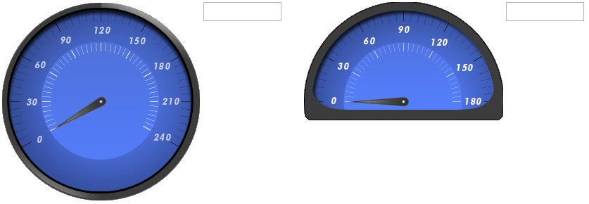
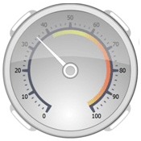
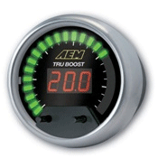

28.Gauge
수정 일자 버전 (SP2)
WebSquare5 Studio : 20180117_1349_x86_B
WebSquare5 Engine : 5.0_2.2982B.20180223.154326_1.5
숫자 계기판 배경에 바늘로 입력값을 나타내주는 컴포넌트
28.1Property
Property | Description |
|---|---|
centerX | 게이지의 중심 축의 X 좌표 값 |
centerY | 게이지의 중심 축의 Y 좌표 값 |
backgroundImageSrc | 게이지의 배경 이미지 파일의 경로 |
maxAngle | 게이지가 최대 값일때 바늘의 각도 |
maxValue | 게이지의 최대 값 |
minAngle | 게이지가 최소 값일때 바늘의 각도 |
minValue | 게이지의 최소 값 |
needleCenterX | 바늘의 중심 축의 X 좌표 값 |
needleCenterY | 바늘의 중심 축의 Y 좌표 값 |
| 바늘 이미지 파일의 경로 |
tabIndex SP2 | Tab Key를 이용 한 컴포넌트의 포커스 순서로 HTML의 tabindex속성과 동일한 기능을 제공한다. |
28.2브라우저 캡쳐화면

[그림 28-1]01
지원하는 게이지 형태 | 지원하지 않는 게이지 형태 |
|---|---|
 |  |